| 회차 | 회원이 겪던 문제 → 고친 것 |
|---|---|
| 1 | 로그인했는데 '비회원 주문하기'·'비회원 주문서' → 회원 문구, 받는 분에 회원 이름 미리 채움 |
| 2 | 내 주문에서 주문 상세로 못 감 → 상품명 링크, 본인 주문은 휴대폰 확인 없이 열람 |
| 3 | 내 주문·장바구니가 글자뿐 → 상품 사진, 주문 상태를 카드 맨 위로 |
| 4 | 계정 화면: 직원용 '역할' 표시, 로그아웃이 가장 큰 버튼 → 현재 탭 표시, 로그아웃 보조 버튼, 수정 화면 '취소' |
| 5 | 폰 상품 상세: 가격·사이즈가 사진 5장 아래 → 사진 가로 넘김 |
| 6 | 주문서 빈 칸만 6개 → 입력 예시, 자동완성, 전화 자판 |
| 7 | 장바구니 담고 로그인하면 장바구니가 비어 버림 → 유지 |
| 8 | 메뉴에 '내 주문' 없음, 항목 12개 나열 → 계정 묶음, 회원 '내 주문' |
| 9 | 취소 요청: 하나뿐인 종류를 직접 선택, 해당 없는 안내 → 미리 선택, 해당 안내만, 사진·돌아가기 |
| 10 | 장바구니에서 로그인하면 홈으로 튕김 → 보던 화면으로 복귀(외부 주소 차단) |
| 11 | 필수 동의 3개를 하나씩 → '필수 항목에 모두 동의' |
| 12 | 웹 내 주문 표·주문서에 사진 없음 → 폰과 맞춤 |
| 13 | 주문 상세 정리 + 상세 → 취소 요청이 주문조회로 튕김(2회차 부작용) 수정 |
| 14 | 검색 결과 제목이 'JIEUM 랭킹', 0건이면 막다른 화면 → '“코트” 검색 결과', 0건이면 인기 상품 |
| 15 | 패드에서 첫 사진이 화면보다 큼 → 두 장 나란히 |
| 16 | 사이즈가 미리 선택돼 고르지 않고 담으면 S 주문 → 직접 선택(옵션 1개면 자동) |
| 17 | 수량 숫자만 고치고 주문하면 반영 안 됨 → − / + 버튼 즉시 반영 |
| 18 | 빈 장바구니·빈 내 주문이 막다른 길 → 인기 상품, '쇼핑하러 가기' |
| 19 | 주문서 동의 누락이 맨 위 박스로만 → 그 칸으로 이동·칸 아래 오류 |
| 20 | 폰에서 비밀번호 오타 확인 불가 → '보기/숨기기' |
| 상황 | 전 | 후 |
|---|---|---|
| 손님이 담고 로그인 → 장바구니 | 0개 | 그대로 유지 |
| 장바구니에서 '로그인' → 로그인 후 위치 | 홈(/) | /cart |
| 상세에서 사이즈 안 고르고 '장바구니' | S가 담김 | 담기지 않고 선택 안내 |
| 수량을 2로 고치고 '변경' 없이 주문 | 1개로 주문 | −/+ 누르는 즉시 반영 |
| 내 주문 → 상세 → 취소 요청 | 주문조회로 튕김 | /my/orders/:id/claims/new |
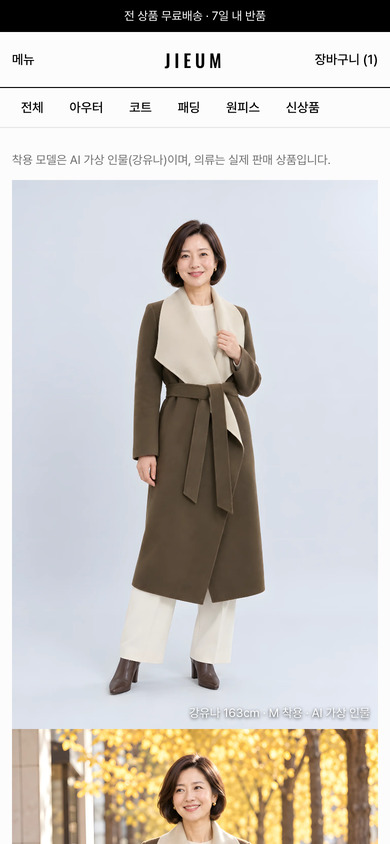
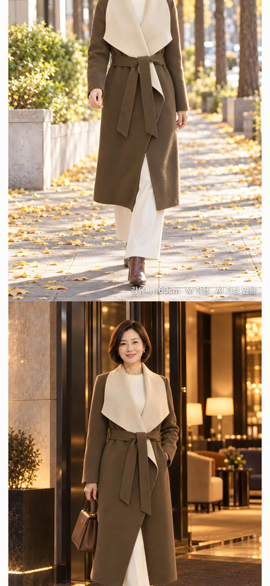
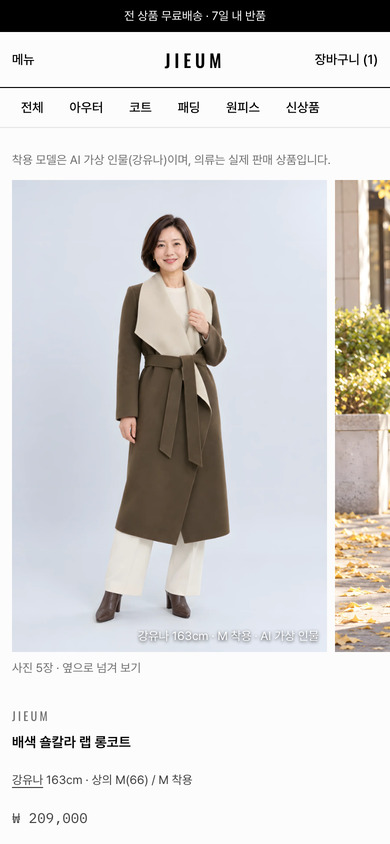
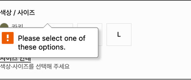
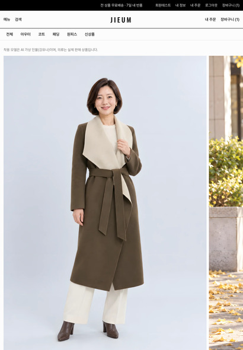
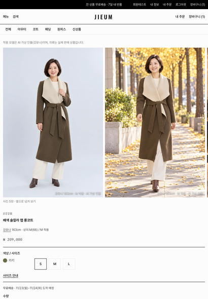
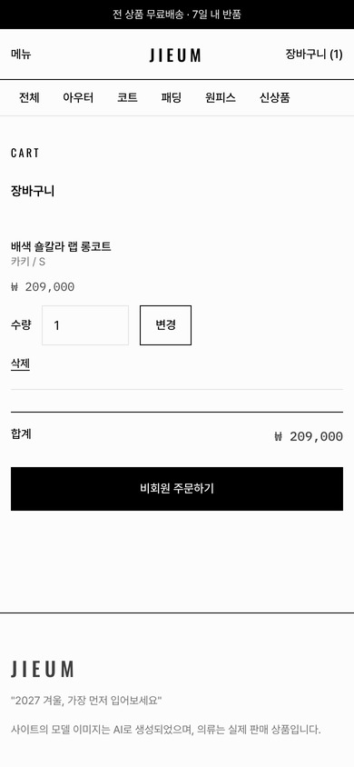
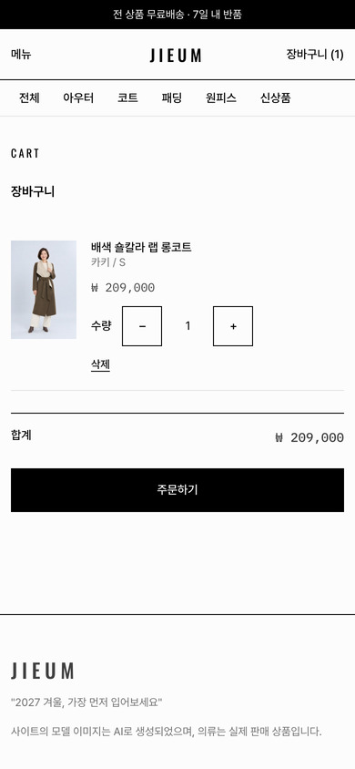
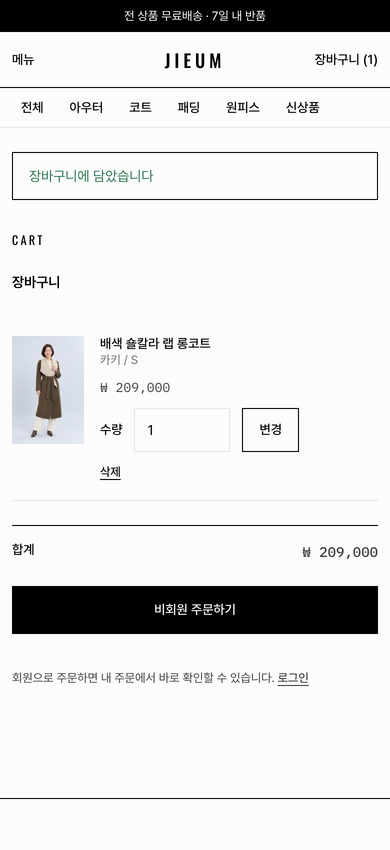
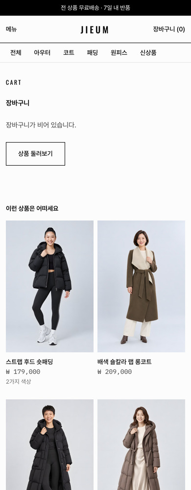
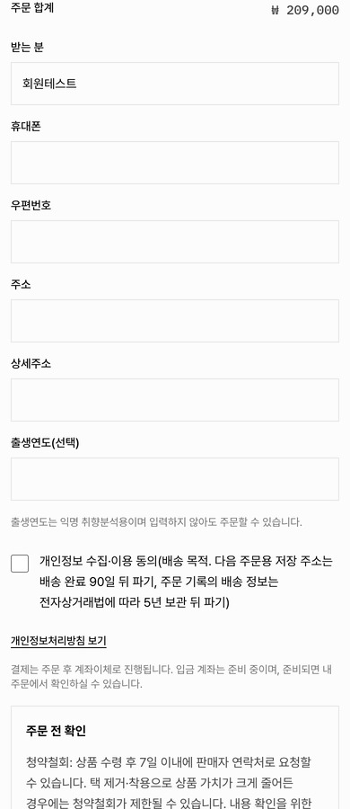
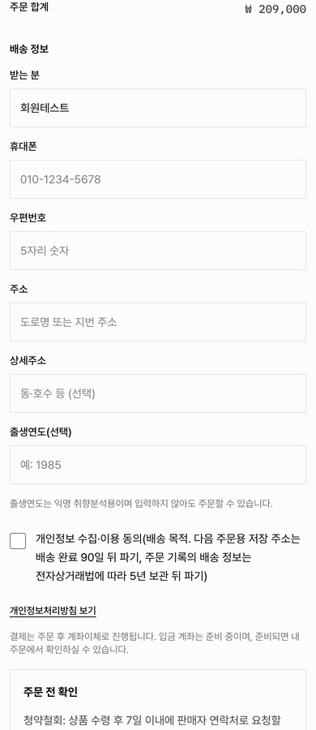
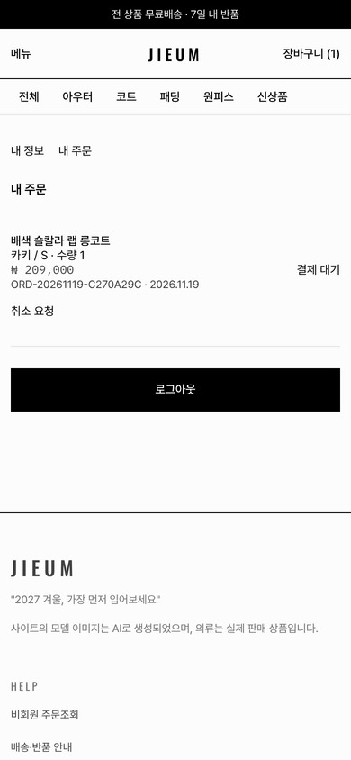
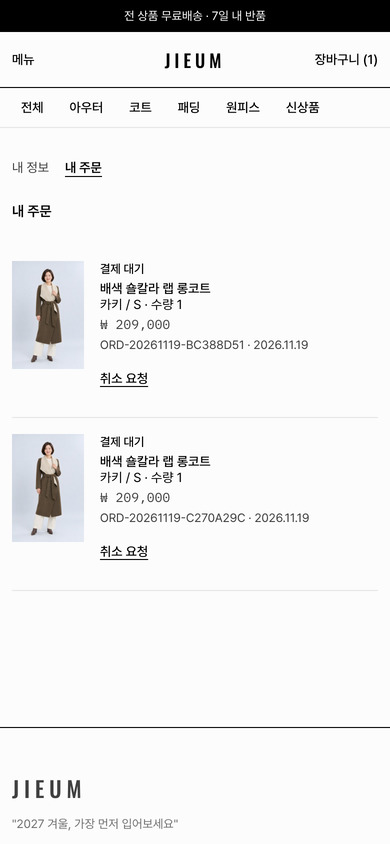
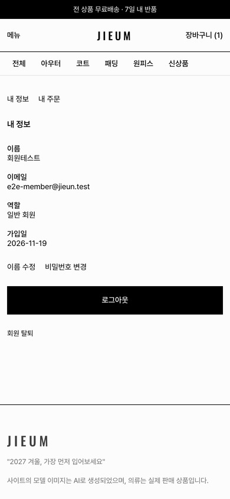
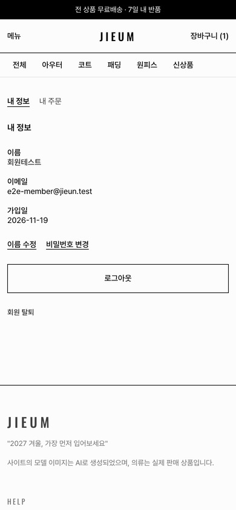
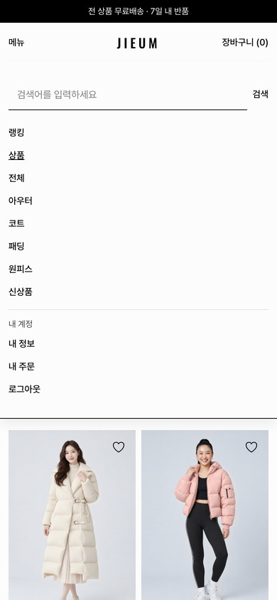
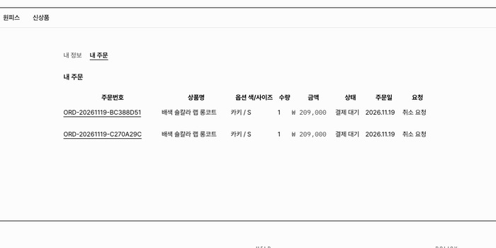
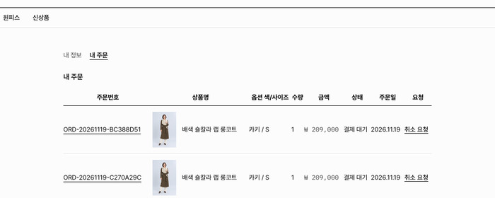
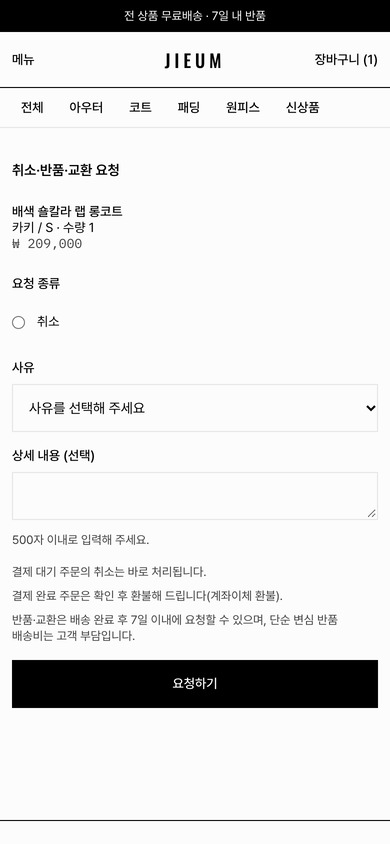
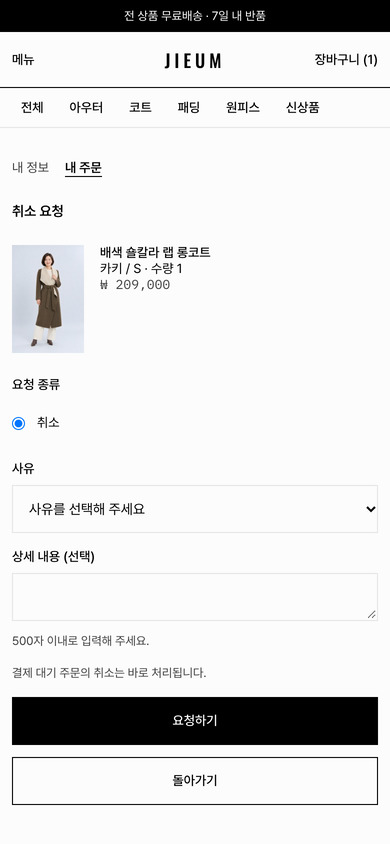
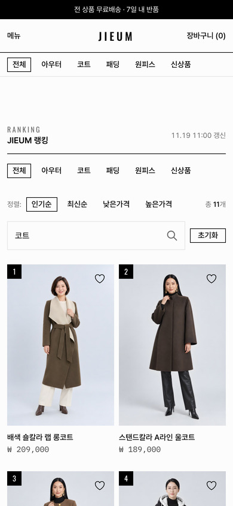
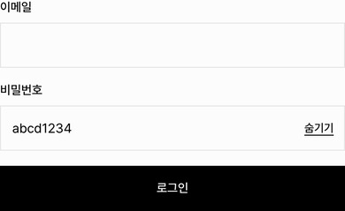